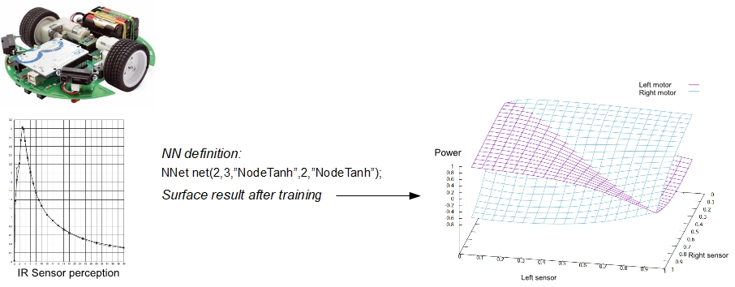

Sensors management
One of the most useful use of Neural Networks on Arduino, can be the continuous function approximation (known also as regression task). Using NN in this way, allows us to simulate a complex and multidimensional behaviour. For example, imagine that you would like to drive the two motors of a rover in relation to its distance sensors. You can use a sequence of test for several thresholds or a complex look table with fixed values. But what about using a continuous multidimensional function that links sensors to motors? That can be done using a Neural Network. First of all you have to decide what kind of behaviour you like to emulate. Then create a sequence of examples for training. In order to create examples, you can list it directly or you can use a Fuzzy system and tabulate its result function (for example using MATLAB software). With examples list you can train NN, preferably on PC because the hundreds thousands cycles needed. Next example show you this kind of application for a rover with 2 sensors (at 30 degree approximately in regard to front direction) and two diametric motors. Sensors react to distance from 4cm to 40cm in a inverse proportionality. Sensor values are normalized from 0 (distance > 40cmm) to 1 (distance < 4cm), and motor power is normalized from -1 to 1.

Complete sketch is included in examples sub-directory.